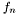

Classes | |
| class | VILLE_PAS_TROUVEE |
| class | Ville |
| class | Villes |
Fonctions | |
| def | recherche |
| def | rechercheOptimisee |
| def | ajouteSuccesseurs |
| def recherche.ajouteSuccesseurs | ( | Q, | ||
| S, | ||||
| methode | ||||
| ) |
Ajoute les successeurs S dans la liste Q
Ajoute les succeseurs S a Q suivant la methode de recherche.
| [in] | Q | la liste initiale |
| [in] | S | la liste des successeurs |
| [in] | methode | la methode de recherche { DFS, BFS, A* } |
Définition à la ligne 347 du fichier recherche.py.
| def recherche.recherche | ( | depart, | ||
| but, | ||||
| methode | ||||
| ) |
Algorithme de recherche
Cette fonction de recherche permet de faire trois types de recherche:
DFS pour la recherche en profondeur d'abord. BFS pour la recherche en largeur d'abord. A* pour la recherche heuristique
Recherche(Noeud_depart, Noeud_but, methode)
1. Q <- [Noeud_depart]
2. while true:
3. if Q est vide:
4. return ECHEC.
5. else
6. n <- premier(Q)
7. Q <- reste(Q)
8. if n est un noeud but:
8. return n
10. else:
11. S <- successeurs de n
12. Q <- ajouterSuccesseurs(Q,S,methode)
| [in] | depart | ville de depart |
| [in] | but | ville d'arrivee |
| [in] | methode | la methode utilisee (DFS,BFS,A*) |
DFS on ajoute S+Q BFS on ajoute Q+S A* on ajoute Q+S et on trie par ordre croissant de  Définition à la ligne 220 du fichier recherche.py.
| def recherche.rechercheOptimisee | ( | depart, | ||
| but, | ||||
| methode | ||||
| ) |
Algorithme de recherche optimisee
L'algorithme de recherche optimisee est tres similaire a celui d'une recherche normale, la grande difference etant que l'on ne visite un noeud qu'une seule fois. Pour cela, on garde la liste C qui contient tous les noeuds deja visites.
RechercheOptimisee(Noeud_depart, Noeud_but, methode)
1. Q <- [Noeud_depart]
2. C <- []
3. while true:
4. if Q est vide:
5. return ECHEC.
6. else:
7. n <- premier(Q)
8. Q <- reste(Q)
9. if n est un noeud but:
10. return n
11. else:
12. if (n not in C and methode is not "A*") or
...(n=n' in C and f(n)<f(n') and methode is "A*"):
13. S <- successeurs de n
14. Q <- ajouterSuccesseurs(Q,S,methode)
15. ajoute n dans C
| [in] | depart | ville de depart |
| [in] | but | ville d'arrivee |
| [in] | methode | la methode utilisee (DFS,BFS,A*) |
Définition à la ligne 287 du fichier recherche.py.
1.5.2